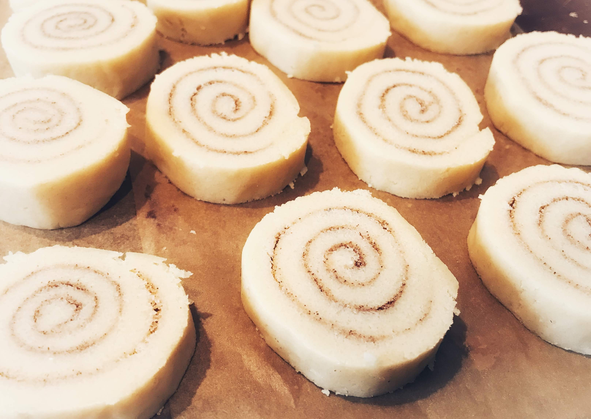
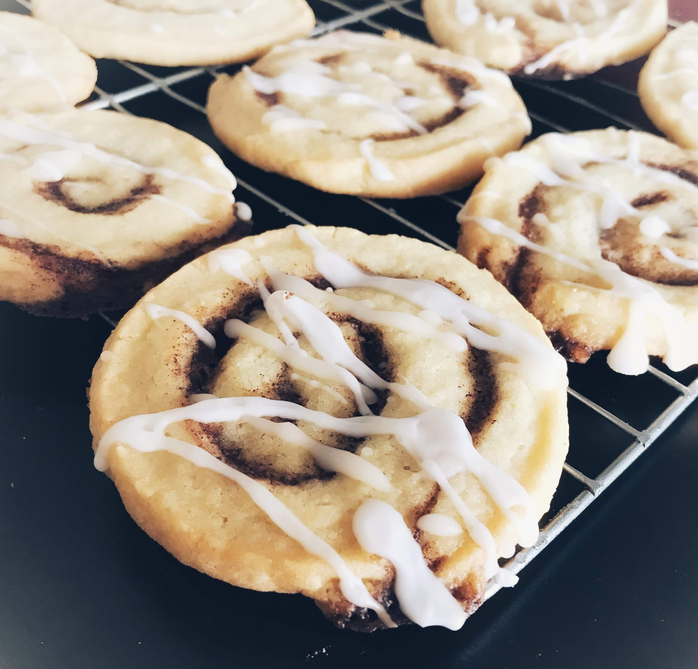

Baking

Chocolate chip sea salt cookies, Mixbies

Lemon meringue pie

Birthday macarons with chocolate ganache

Sponge cake with rainbow buttercream

Smores bars

Matcha white chocolate and chocolate chip cookie dough

Cinnamon roll cookies

Iced coffee swirl cookies, Mixbies

Confetti cookies, Mixbies

Matcha crêpe cake with orange cream

Barbeque pork buns

Pomelo meringue pie

Moon cakes with walnut and date filling

Pomelo meringue roulade

Shortbread cookies